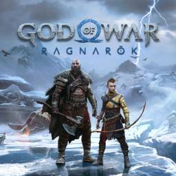
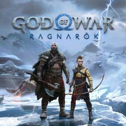

The Game Awards (TGA) é uma cerimônia de premiação anual que reconhece os melhores jogos eletrônicos de cada ano, além de grandes feitos na indústria. Novos títulos também são anunciados durante as cerimônias, que são exclusivamente produzidas e apresentadas por Geoff Keighley, o qual, por sua vez, trabalhou anteriormente na Spike Video Game Awards. A primeira cerimônia foi apresentada no dia 5 de dezembro de 2014 em Las Vegas, Nevada, sob olhares do mundo inteiro, deu à premiação o posto de "Óscar dos Videogames". A cerimônia mais recente, The Game Awards 2022, ocorreu no dia 8 de dezembro de 2022.
Game of The Year

 
